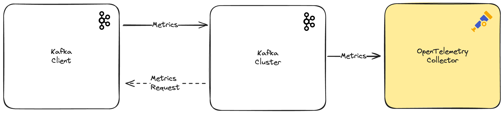

Monitoring Kafka clients with KIP-714
06 June 2024
One of my favourite Kafka KIPs is KIP-714, which adds a new way to monitor Kafka client metrics. This is a very important feature for anyone running Kafka in production, as it allows you to monitor the health of your clients and the impact they have on the Kafka cluster.
It also uses the OpenTelemetry standard, which is great for integrating this feature with many monitoring tools and services.

In this article, we'll take a look at how this new feature works and how you can use it to monitor your Kafka clients.
Kafka cluster setup
To use KIP-714, you need to have a Kafka cluster running with at least version 3.7.0. It also requires Kraft mode to be enabled, which is the new mode to run Kafka brokers without requiring Zookeeper.
You can download the latest version of Kafka from the Apache Kafka website. It's very easy to set up a Kafka cluster with Kraft following the official documentation, in particular the Quickstart guide.
The first step is to start a Kafka broker with the following commands:
KAFKA_CLUSTER_ID="$(bin/kafka-storage.sh random-uuid)"
bin/kafka-storage.sh format -t $KAFKA_CLUSTER_ID -c config/kraft/server.properties
bin/kafka-server-start.sh config/kraft/server.properties
The next step is to configure the broker to retrieve the client metrics. This is the command to do it:
bin/kafka-client-metrics.sh --bootstrap-server localhost:9092 --alter --generate-name \
--metrics org.apache.kafka.producer. \
--interval 5000
For this example, we are monitoring only the producer metrics every 5 seconds.
Thanks to KIP-1000, it's possible to list the client metrics configuration resources introduced by KIP-714.
bin/kafka-client-metrics.sh --bootstrap-server localhost:9092 --list
It should return the generated name, in this case, a random string of
characters. It's important to understand that processing all client metrics
through the Kafka broker can have a performance impact. In that sense, it can be
handy only dynamically enable the required metrics and filter the clients that
we want to monitor. kafka-client-metrics.sh can filter by:
- client_instance_id
- client_id
- client_software_name
- client_software_version
- client_source_address
- client_source_port
Add a metric reporter
There are different ways to report Kafka cluster metrics, but there's one in particular that it's a hidden gem, it isn't even mentioned in the Monitoring section of the official Kafka documentation: Yammer metrics custom reporters.
They can be configured with the kafka.metrics.reporters property:
A list of classes to use as Yammer metrics custom reporters. The reporters should implement kafka.metrics.KafkaMetricsReporter trait. If a client wants to expose JMX operations on a custom reporter, the custom reporter needs to additionally implement an MBean trait that extends kafka.metrics.KafkaMetricsReporterMBean trait so that the registered MBean is compliant with the standard MBean convention.
To use create a MetricsReporter, we need to create a class that implements the org.apache.kafka.common.metrics.MetricsReporter interface. We don't need to add any logic to the methods, as we aren't interested in the cluster metrics for this article.
KIP-714
has added a new interface that needs to be implemented to report the client
metrics:
org.apache.kafka.server.telemetry.ClientTelemetry.
Our MetricsReporter also has to implement this new interface. It has just one
method, clientReceiver, that returns a ClientTelemetryReceiver:
@Evolving
public interface ClientTelemetry {
ClientTelemetryReceiver clientReceiver();
}
In this particular example, we are going to send the metrics to an OpenTelemetry collector running in the same machine. This feature is very interesting because this KIP uses the OpenTelemetry format for the metrics. We don't need to change the format of the metrics if the monitoring tool we are using supports OpenTelemetry, as they should do. We can just to forward the metrics without any transformation.
You can see a demo implementation of the MetricsReporter in this
GitHub repository.
It's ugly and inefficient, but it's to show how to work with this new feature.
Otel/GRPC would be a better choice.
The next step is to build the project and copy the JAR file to the Kafka broker lib directory:
./gradlew build
cp build/libs/lib/build/libs/demo-kip714-0.1.0.jar $KAFKA_HOME/libs
Finally, we need to add the metrics.reporters property to the
$KAFKA_HOME/config/kraft/server.properties file:
metric.reporters=com.galiglobal.CustomMetricsReporter
This will require a restart of the Kafka broker:
bin/kafka-server-stop.sh
bin/kafka-server-start.sh config/kraft/server.properties
Test the setup with a Kafka producer
It's time to see if it's working. Let's start a Kafka producer:
bin/kafka-producer-perf-test.sh \
--throughput 2 \
--record-size 1000 \
--num-records 300000 \
--topic perf-test-topic \
--producer-props bootstrap.servers=localhost:9092 linger.ms=100 batch.size=16384 \
--print-metrics | grep \
"3000 records sent\|
producer-metrics:outgoing-byte-rate\|
producer-metrics:bufferpool-wait-ratio\|
producer-metrics:record-queue-time-avg\|
producer-metrics:request-latency-avg\|
producer-metrics:batch-size-avg"
The kafka-producer-perf-test.sh script is perfect to send a bunch of random
messages to a Kafka topic. We are using the --print-metrics flag to print
metrics to the console. We are also using the grep command to filter the
metrics we are interested in.
In the terminal of the broker, we should start seeing messages like this:
[2024-06-07 21:50:58,999] INFO CustomTelemetryReceiver: E6-tEjUcRJClUJpf-woDOA: OTLP (com.galiglobal.CustomMetricsReporter) [2024-06-07 21:50:59,007] ERROR Error sending the request: null (com.galiglobal.CustomMetricsReporter)
They show the clientId of the producer and the format of the metrics (OTLP). It also shows an error message because we don't have a service to receive the metrics yet. Let's fix that.
Start an OpenTelemetry collector
The OpenTelemetry collector is a service that receives metrics, traces and logs to process them. For this example, we are going to configure it to receive metrics from the Kafka broker and send them to New Relic. Detailed instructions can be found in the New Relic documentation and the example Otel collector configuration in the GitHub repository.
The OpenTelemetry collector can be started with the following command:
docker run --rm -e NEW_RELIC_API_KEY=$NEW_RELIC_API_KEY \
-v "${PWD}/collector.yaml":/etc/otelcol/config.yaml \
-p 127.0.0.1:4317:4317 \
-p 127.0.0.1:4318:4318 \
-p 127.0.0.1:55679:55679 \
otel/opentelemetry-collector:0.102.1
Metrics should be available in the New Relic dashboard after a few seconds. An example of the dashboard is available in the GitHub repository and it can be easily imported to your New Relic account following the New Relic dashboard documentation.

Conclusion
I hope you enjoyed this article and that it helps you to monitor your Kafka. If you have any questions or comments, please let me know.You can reach me on BlueSky or GithHub.